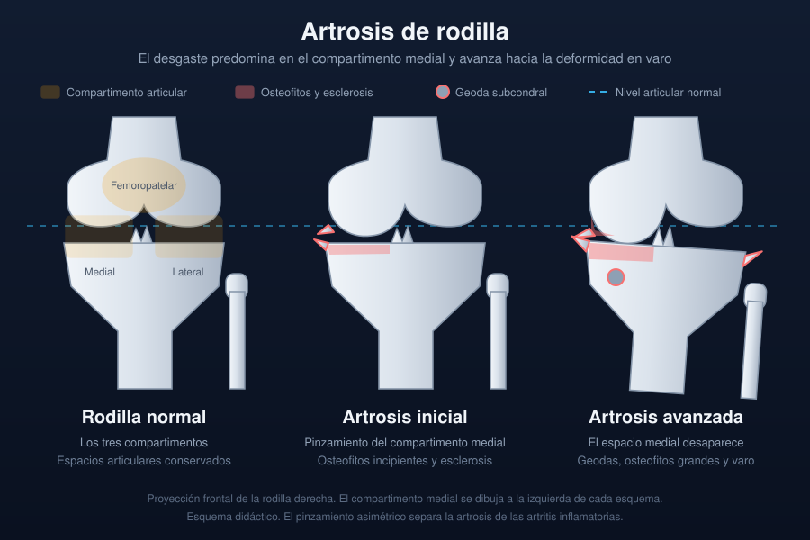

Ficha del catálogo
Artrosis de rodilla (gonartrosis)
- Sistema
- Óseo
- Modalidad
- RX
- Región
- Rodilla
- Dificultad
- Básico
La artrosis de rodilla es una de las causas más frecuentes de dolor y discapacidad en la población adulta. Afecta sobre todo al compartimento femorotibial medial y al femoropatelar, y provoca deformidad progresiva en varo. La radiografía sigue siendo la herramienta básica de valoración porque muestra de forma directa la pérdida del espacio articular que representa el desgaste del cartílago. La correlación entre la imagen y los síntomas es imperfecta, de modo que el informe debe describir hallazgos sin atribuirles automáticamente el dolor.
Técnica
Radiografía anteroposterior en bipedestación con carga y proyección lateral, complementadas con una axial de rótula. La carga es imprescindible porque en decúbito el espacio articular parece conservado.
Qué observar
- Pinzamiento asimétrico del espacio femorotibial, habitualmente medial
- Osteofitos marginales en las espinas tibiales y en los bordes condíleos
- Esclerosis subcondral en la zona de mayor carga
- Geodas o quistes subcondrales con halo esclerótico
- Deformidad en varo del eje femorotibial
- Afectación femoropatelar en la proyección axial y en la lateral
Hallazgos
Reducción del espacio articular con osteofitos marginales, esclerosis subcondral y quistes, de predominio en el compartimento medial y en la articulación femoropatelar.
Perlas
El pinzamiento asimétrico es el rasgo que separa la artrosis de las artritis inflamatorias, que tienden a reducir el espacio de forma uniforme en todos los compartimentos. La ausencia de erosiones marginales y la presencia de hueso neoformado apuntan también a proceso degenerativo.
Diagnóstico diferencial
- Artritis reumatoide
- Pinzamiento uniforme, osteopenia periarticular y erosiones sin osteofitos.
- Artropatía por depósito de pirofosfato
- Calcificación de meniscos y cartílago hialino con predominio femoropatelar.
- Osteonecrosis del cóndilo femoral
- Aplanamiento y línea subcondral focal con dolor de inicio brusco.
Simuladores
- Radiografía en decúbito que oculta el pinzamiento
- Angulación del rayo que estrecha de forma aparente el espacio
- Calcificaciones meniscales confundidas con osteofitos
Por modalidad
- RX
- Método básico de valoración y seguimiento
- RM
- Evalúa cartílago, meniscos y edema óseo cuando se plantea otra causa de dolor
- TC
- Útil en la planificación quirúrgica y en deformidades complejas
Protocolo
Anteroposterior en carga, lateral y axial de rótula. Proyección en semiflexión cuando se quiere valorar mejor la zona de contacto posterior del cóndilo.
Clasificación
La graduación de Kellgren y Lawrence ordena la artrosis en cinco grados según el pinzamiento, los osteofitos y la esclerosis, desde ausencia de cambios hasta deformidad avanzada.
Errores frecuentes
- Valorar el espacio articular en radiografías sin carga
- Atribuir todo el dolor a los hallazgos degenerativos sin considerar otras causas
- Olvidar la proyección axial y no diagnosticar la artrosis femoropatelar

rodilla artrosis gonartrosis carga osteofitos pinzamiento kellgren y lawrence